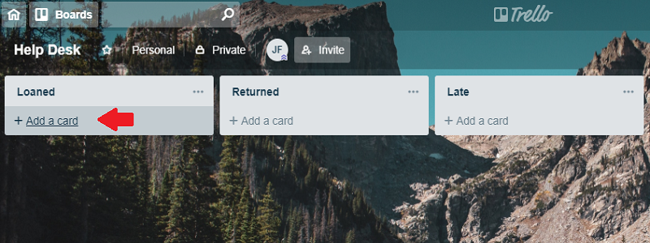
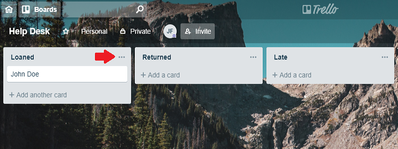
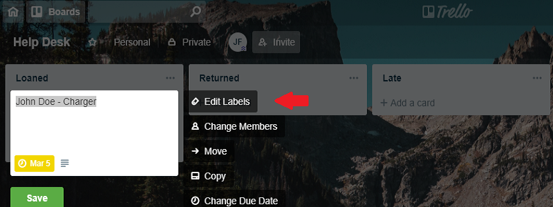
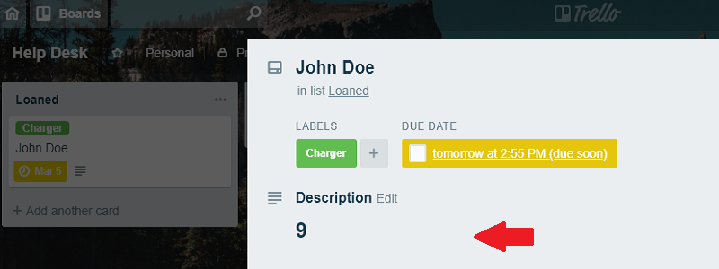
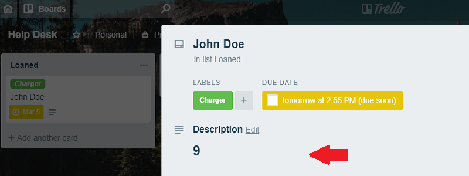

1.) Select "ADD CARD" on the Loaned list and add customer's name.
2.) Add the asset label.
 3.) Add a due date to the card.

4.) Change "description" to asset number of the card.
 

1.) Once asset is returned, add returned label and place in returned column.

2.) If asset is not returned by the end of the day, add late tag and place in the late column.